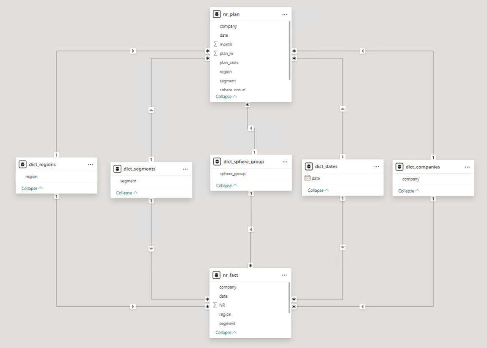

ChatGPT для аналитика данных. Пример успешных и не успешных кейсов использования в работе.

В этом видео я делюсь своим опытом использования ChatGPT 4 в работе. С мая 2024 года ChatGPT 4 стал доступен бесплатно, хоть и с ограниченным доступом, что позволяет нам исследовать его потенциал без дополнительных затрат. Я расскажу о нескольких кейсах, включая успешные и неуспешные примеры, и покажу, как именно я использую этот мощный инструмент для улучшения рабочих процессов. Вы узнаете, как ChatGPT может помочь в генерации кода на R и M, а также увидите, какие сложности могут возникнуть при попытке перевести код с Python на R.
Видео
Тайм коды:
- 00:00 Вступление
- 01:08 Пользовательские GTP для аналитика данных
- 07:31 Успешный кейс №1: Генерация R кода для запроса курсов валют
- 13:33 Успешный кейс №2: Генерация кода на языке M для генерации справочников в Power Query
- 20:05 Успешный кейс №3: Генерация R кода для отправки HTTP запроса по скриншоту из Postman
- 24:56 Неуспешный кейс: Перевод Python кода в R
- 28:33 Заключение
Презентация
Конспект
Пользовательские GPTs
Пользовательский (custom) ChatGPT — это адаптированная версия модели ChatGPT, настроенная специально под нужды конкретного пользователя или компании:
- Настройка под нужды: Это значит, что модель обучена или настроена с учётом специфики использования. Например, она может быть обучена на данных вашей компании, чтобы лучше понимать ваш бизнес и отвечать на вопросы более точно.
- Персонализация: Пользовательский ChatGPT может быть настроен так, чтобы понимать ваши предпочтения, стиль общения и частые вопросы. Например, если вы часто спрашиваете о погоде или биржевых котировках, модель может давать такие ответы быстрее и точнее.
Пользовательские GPTs которые я использую в работе:
- R Wizard
- Power BI Wizard
- SQL Expert
- BigQuery SQL Copilot
Вы можете спросить у любого пользовательского GPT о его предназначении, и то чем он отличается от обычного Chat GPT.
Кейс №1: Генерация кода для получение курса валют
Задача:
В одном из моих довольно старых проектов использовалась конвертация курсов, для чего изначально я запрашивал курсы валют с помощью пакета quantmod, после того как он перестал работать я, перешел на работу с apilayer.net, но в бесплатном тарифе было очень сильно ограничено количество запросов в месяц, и мне необходимо было найти новое решения для запроса курсов валют.
Используемый промпт:
Мне ежедневно надо получать с помощью языка курсы валют и получать курс относительно USD, при чём список этих валют может изменяться, напиши мне несколько вариантов кода для этого, сначала с помощью определённых пакетов, потом с помощью каких нибудь бесплатных API. Давай для примера возьмём такие валютные пары: KZT, UAH, BGN, RUB, GBP, нужен их курс относительно USD. На выходе я хочу получить таблицу date – дата курса, curfrom – из какой валюты конвертируем, curto – в какую валюту тут всегда будет USD, curbid – значение курса валюты.
Кейс №2: Генерация справочников из столбцов таблиц
Задача:
При разработке модели данных в Power BI у меня было 2 таблицы, одна с плановыми показателями, другая с фактическими. Обе таблицы содержали 4 одинаковых параметра, по которых их надо было связать. Но т.к. могли попадаться сегменты отсутвующие либо в фактической таблице, либо в плановой, мне необходимо было сначала вертикально объединить эти таблицы, потом по очереди взять уникальные значения из 4 столбцов, и создать на их основе 4 справочника.
Модель данных которую мне необходимо было создать:

У меня были таблицы nr_plan и nr_fact, необходимо было сгенерировать на их основе 5 справочников.
Промпт:
Привет, у меня есть 2 запроса в Power BI, они схожей структуры, одна с фактическими показателями, другая с плановыми. Каждая из таблиц имеет 5 столбцов: 1ая таблица состоит из столбцов: date, segment, sphere_group, region, nr_fact 2ая таблица состоит из столбцов: date, segment, sphere_group, region, nr_plan Для их связки мне необходимо создать 4 отдельные таблицы справочника: date, segment, sphere_group, region. Для создания каждого справочника сначала надо, из таблиц убрать столбцы nr_fact и nr_plan, далее соединить таблицы друг под другом по столбцам date, segment, sphere_group, region, потом оставить 1 столбец, который соответвует одному справочнику например segment, и оставить в итоге таблицу с уникальными значениями по столбцу segment. Помоги мне написать такой код на языке M для редактора Power Query,
Кейс №3: Написание запроса к API по скриншоту из Postman
Задача:
Для того что бы показать пример того, как необходимо отправить запрос к одному APIколлега мне просто прислал скриншот из Postman, и по этому скриношоту мне необходимо было написать код на R для генерации этого запроса.
Промпт:
Я тебе скину скрин из Postman, напиши мне пример кода на R с пакетом httr2 что бы воспроизвести такой запрос, но учитывай что массив taskIds может быть переменной длинны, и содержать от 1 до 50 элементов, т.е. нужен универсальный подход, просто прописать taskIds[0] taskIds[1] неполучится.
Скрин выглядел следующим образом:

Кейс №4: Перевод кода Python на R
Задача:
•У меня был код класса написанный на Python, который при необходимости я использовал в R с помощью пакета reticulate. И с помощью ChatGPT я планировал перевести этот код с Python на R.
Промпт:
Я тебе ниже дам код написанный на языке Python, мне надо что бы ты переписал этот код на язык R с использованием R6 классов. Этот код принимает на вход зашифрованные данные, в основе шифрования лежит метод BlowFish, но не чистый а доработанный, и созданный там класс принимает ещё ключ шифрования и возвращает уже расшифрованные данные. Вот код, перепиши его на R:
import base64
import hashlib
import keyring
import pandas as pd
from os import getlogin as user
from Crypto.Cipher import Blowfish
class Encryption:
def __init__(self, key=None, hash_type='sha1'):
self.key = key.replace("+space+", "_") if key else keyring.get_password('pydecoder', user()).replace("+space+", "_")
self.md5_key = hashlib.md5(self.key.encode('utf-8')).hexdigest()
self.hash_type = hash_type
def decrypt(self, data, data_type='num'):
try:
data_base_64 = base64.b64decode(data)
data = self.remove_cipher_noise(data_base_64, self.md5_key)
init_size = Blowfish.block_size
if init_size > len(data):
return None
init_vector = data[0:init_size]
data = data[init_size:]
cipher = Blowfish.new(self.md5_key.encode(), Blowfish.MODE_CBC, init_vector)
result = cipher.decrypt(data)
except:
print('Data: {} - Decoding error. Init problem'.format(data))
if data_type == 'num':
return 0
else :
return 'Decoding error. Init problem'
try:
result = result.decode().rstrip('\\0').replace("\x00", "")
if data_type == 'num':
result = pd.to_numeric(result)
except Exception as error:
print('Cannot decode str - [{}]. Error - [{}]'.format(data, error))
if data_type == 'num':
return 0
else :
return 'Decoding error'
if data_type == 'num':
result = pd.to_numeric(result)
return result
def decrypt_column(self, data, column_name):
# encoding
data = pd.DataFrame(data)
for index, row in data.iterrows():
data.loc[index, column_name] = self.decrypt(data.loc[index, column_name])
return data
def get_key(self):
print("User", user())
return keyring.get_password('pydecoder', user()).replace("+space+", "_")
def set_key(self, user=user()):
keyring.set_password("pydecoder", user, self.key.replace("_", "+space+"))
def remove_cipher_noise(self, data, key):
key_hash = self.hash(key)
key_index = 0
data_len = len(key_hash)
data_result = bytes('', 'utf-8')
for value in data:
if key_index >= data_len:
key_index = 0
temp = value - ord(key_hash[key_index])
if temp < 0:
temp += 256
data_result += bytes([temp])
key_index += 1
return data_result
def hash(self, hash_str_data):
return self.sha1(hash_str_data) if self.hash_type == 'sha1' else hashlib.md5(hash_str_data).hexdigest()
def sha1(self, str):
return hashlib.sha1(str.encode('utf-8')).hexdigest()
Заключение
Итак, ChatGPT продемонстрировал значительный потенциал в поддержке аналитиков данных, предоставляя эффективные решения для автоматизации рутинных задач и генерации кода. Успешные примеры, такие как создание запросов на R и M, иллюстрируют его возможности в улучшении рабочих процессов и экономии времени. Однако неуспешные кейсы, например, перевод кода с Python на R, подчеркивают важность человеческого контроля и корректировки. Важно помнить, что использование ChatGPT требует внимательности и понимания его ограничений. Правильная настройка и применение модели могут существенно повысить эффективность работы аналитиков данных.